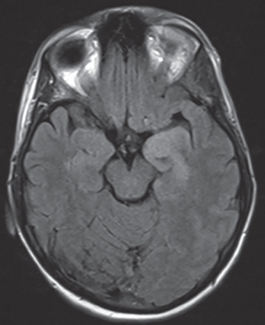

Bloods taken on admission are unremarkable except for the following:
| WCC | 13.1 | 4.0 -11.0 ( × 10^9/L) |
|---|---|---|
| Neutrophils | 9.2 | 1.8-7.5 (× 10^9/L) |
| Lymphocytes | 3.5 | 1.0-4.0 (× 10^9/L) |
| CRP | 58 | < 5mg/L |
What is the probable diagnosis?
What is the most appropriate investigation to obtain the definitive diagnosis?
A Lumbar Puncture is performed. The results are as follows:
| Appearance | Clear | |
|---|---|---|
| Opening Pressure | 22 | <20 cm H20 |
| WCC | 150 | <100/ uL |
| Lymphocytes Predominate | ||
| Protein | 100 | <50 mg/dL |
| Glucose CSF/Serum Ratio | 0.7 | |
| PCR | + HSV DNA |
Choose the most suitable treatment option for this patient.
|
 |
|
Which area of the brain is most commonly affected by this disease?